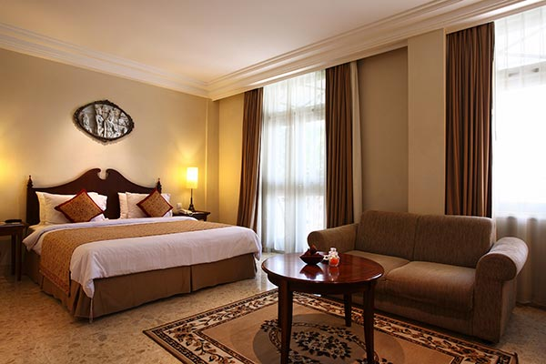
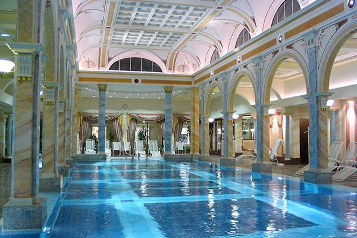

Located in London’s West End, the Landon Hotel is at the heart of the city. The West End has something for everyone—from theater to dining to historic sights. And the not-to-miss Rooftop Cafe is a great place for travelers and locals to engage over drinks, food, and good conversation. Far from being solely a tourist hotel, the West End Landon is an important venue for the local community and meetings.
Superlative Comfort and Service
Established 50 years ago, and thoroughly refurbished throughout, this is the Landon that started it all. The West End Landon prides itself on offering its guests an experience to treasure.
Guest Rooms
Business or for pleasure, we’ve got the ideal room for you. All our rooms are furnished to the highest standard, classic in style, yet with a modern flair.
Fitness
In addition to our 24-hour fitness center, the Landon has a superb indoor pool, in-room jacuzzis, and a full-service spa.
wedding

Your wedding is a day you’ll want to cherish for the rest of your life. We make sure everything isperfect down to the last detail.
To learn more, browse our website and download our handy information sheet (2.6MB PDF).